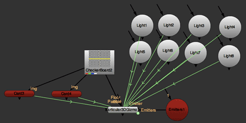
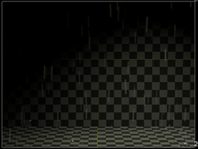

Example Scripts for Particular
While working with Trapcode Particular for Nuke, you may find it helpful to start with one of the examples we included with the installer. These examples can be useful as time savers or as simple demos of what you can do with Trapcode Particular for Nuke.
You can find these in the Example Scripts folder in the installer .zip file. To access the scripts, go to the /Example Scripts/directory where the plugin is installed.
Included are scripts that can be imported in place of using the Particular 3D Gizmo. We have also included more advanced setups that have Nuke Light nodes and Card nodes linked, respectively, to Particular’s Light and Wall/Floor properties.
 
Left to right, a light script and rain script.